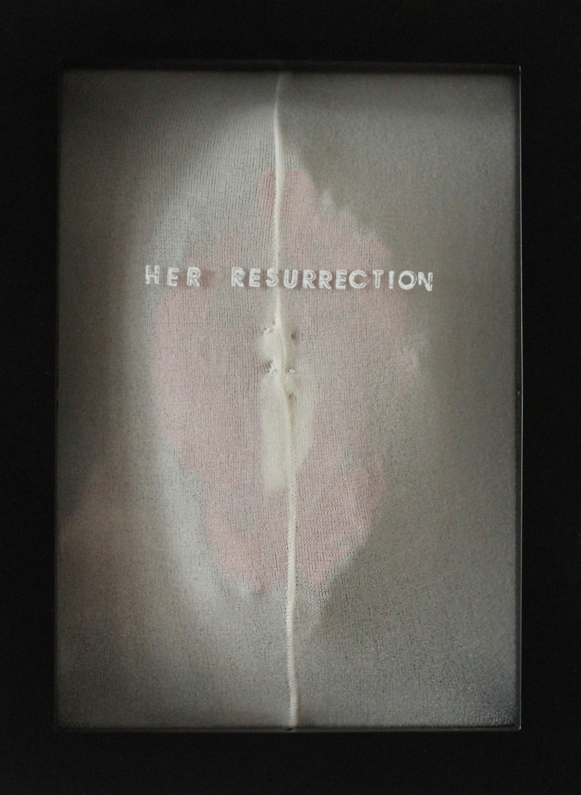
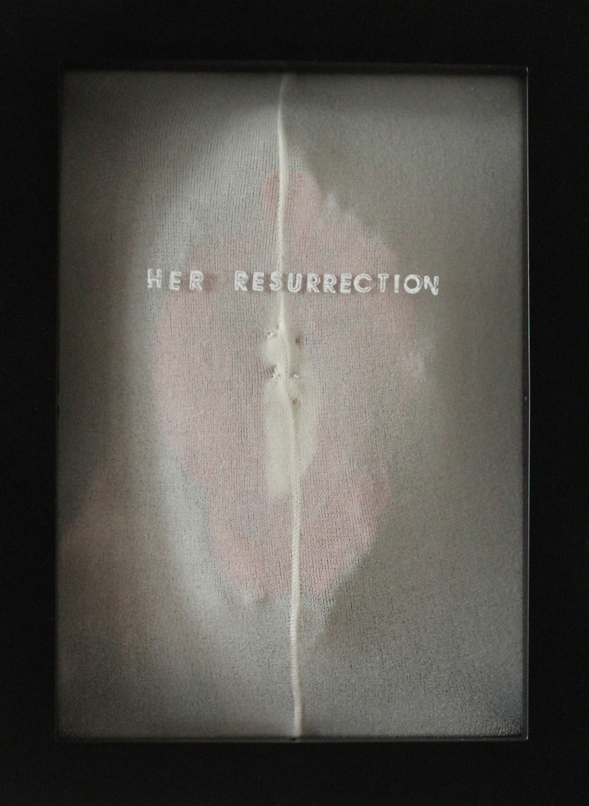

Discontinuity marks the female experience. Physical disruptions and changes, such as menstruation and childbearing, have social, emotional, and psychological weight. Through video, photography, and collage construction through found material, this body of interdisciplinary work explores female physical changes and how these experiences, and recovery from them, shape inner life and self perception.
Many of these dramatic physical changes are preparation for new life. Yet, death, pain, and loss are intrinsically tied into their cycles. In this way, it is apt to draw on Western Christian compositions: as with Sanguine (Stations), presenting the menstrual cycle as the stations of the cross, illuminates each journey toward death to life, and helps uncover the spiritual dimension of physical experience. The body is both displayed and transformed through pieces such as blast-o!, a hat/mask made from a baby shower's leftover wrapping paper and balloons, which use abstracted, repetitive forms to depict inner and outer changes in the female body--in this case, a blastocyst as well as ballooning breasts.
A provocative and playful meditation that bridges inner and outer transformation, WHITE WHITE RED: living woman closely observes both inward and outward to describe an archetypal spiritual struggle as incarnated in the female experience.


This is a fake quote. It was taken from a real quote. This day is really many months. I watch the world. I watch the natural cycle of things. Cliche as it may be, this is what cures me.